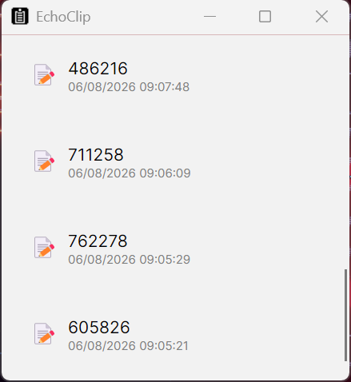

EchoClip
EchoClip — gestionnaire de presse‑papiers léger pour Windows & Linux.
Historique automatique du presse‑papiers avec support du texte, des liens et des images.
Surveillance en temps réel
Support Texte / Liens / Images
Détection intelligente des doublons
Intégration dans la zone de notification
Copie rapide via clic droit
Windows & Linux
Licence MIT
Téléchargements directs
Captures d’écran
